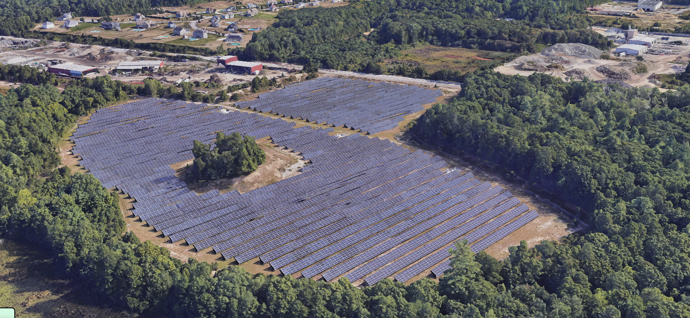

People v. Solar Farm
Can we develop a renewable energy economy without compromising people’s quality of life? A solar company proposes to build a solar farm in a residential area, claiming that it will generate renewable energy for the town. However, nearby residents are concerned about their scenic view, citing the lack of a vegetative buffer. Both sides will argue for their own rationale in a public hearing, where the town planning board will decide on a final design that meet the needs of everyone.
Based on real events, People v. Solar Farm is an integrated engineering design and social studies unit for middle school and high school students. Students will be split into three teams (the solar company, residents, and planning board), take on different roles such as engineers and lawyers, participate in a public hearing simulation, and use Aladdin to collect evidence to support their arguments. In Part 1, the solar company and residents will present arguments for and against an existing solar farm design, and the planning board will decide whether a vegetative buffer is needed. In Part 2, the solar company and residents will present their own redesigns for the planning board to decide. Students will practice a range of skills, including engineering design, argumentative writing, and public speaking, and collaboration.
Learning Goals
After finishing this unit, students will be able to:
- Evaluate a design solution using the given criteria and constraints
- Collect evidence of the design performance using computer simulations
- Improve the design performance through iterations
- Create a design that meets the given criteria and constraints
- Explain the choice of design variables using scientific principles
- Write an argument with a claim and supporting evidence
- Communicate a design to a target audience

Click HERE to view and edit the above model
Prerequisites
Before starting this unit, it is recommended that students have already completed both the Solar Energy Science Unit and Solar Farm Design Unit.Student Documents
- Public Hearing Introduction
- Public Hearing Guide & Sign-In Sheet
- Public Hearing Part 1
- Public Hearing Part 2
Customizations
To make the design experience more relevant for students, teachers can model a real-world solar farm near their schools in Aladdin using its Google Maps integration and the layout wizard. For easier teamwork, teachers can split the solar company and resident teams further into groups of three, so that there are multiple companies bidding for the same solar farm and multiple households in the neighborhood.
Related Educational Standards
The College, Career, and Civic Life (C3) Framework: D2.Geo.2.6-8, D2.Geo.2.9-12, D2.Civ.13.6-8, D2.Civ.13.9-12
The Next Generation Science Standards (NGSS): MS-ETS-1, HS-ETS-1
Acknowledgements
The development of this curriculum unit is supported by the National Science Foundation (NSF) under grant numbers #2131097 and #2301164. Any opinions, findings, and conclusions or recommendations expressed in this material, however, are those of the authors and do not necessarily reflect the views of NSF.